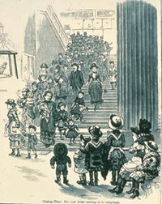
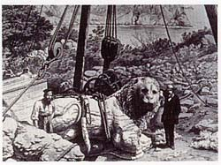
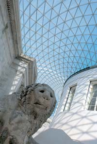

|
|
 Le British Museum: Historique
Le British Museum: Historique
|
| Les
origines du British Museum reposent dans les collections de Sir Hans
Sloane (1660 - 1753), éminent médecin et naturaliste. Sloane a légué
à George II, pour la nation britannique, son musée, renfermant 80
000 objets, son herbarium et sa bibliothèque, contre le versement
de 20 000 livres à ses filles. Grâce au British Museum Act de 1753,
le Parlement a levé des fonds en organisant une loterie nationale.
Le 15 janvier 1759, le British Museum ouvrait pour la première fois
ses portes au public. A l'exception des deux guerres mondiales, durant
lesquelles une partie de la collection a été évacuée, le musée n'a
jamais fermé depuis, élargissant progressivement ses horaires de visite,
pour passer de quelque 5 000 visiteurs par an à plus de 5 millions
aujourd'hui. |
 |
|

|
Depuis
le début, le British Museum a été une institution bien particulière.
Régies par une commission d'administrateurs, responsable devant le
Parlement, ses collections appartenaient à la nation et l'entrée était
gratuite et ouverte à tous. Le musée était destiné à toutes les personnes
intéressées par les arts ou désirant étudier et, tout au long de son
histoire, il est resté très lié à l'érudition et à l'éducation. Depuis
l'origine, une salle de lecture a été mise à disposition des visiteurs,
qui pouvaient ainsi consulter les ouvrages de la bibliothèque, et
un personnel érudit organisait et classait les collections. La première
« salle d'étude », qui accueille aujourd'hui les dessins et gravures,
a été ouverte en 1808. |
|
La collection
originale était essentiellement composée de livres, de manuscrits
et de pièces d'histoire naturelle, ainsi que de quelques antiquités
(notamment des pièces de monnaie, des médailles, des gravures et
des dessins) et d'objets ethnographiques. Le musée a tout d'abord
été installé dans un hôtel particulier du XVIIe siècle, qui a cependant
vite été débordé par l'évolution rapide des collections. En 1823,
George IV a offert à la nation la bibliothèque conséquente de son
père (la King's Library) et cet ajout a entraîné la construction
du bâtiment néo-classique actuel, conçu par Sir Robert Smirke. La
première partie a été terminée en 1852, suivie en 1857 par la Reading
Room ronde, érigée dans la cour centrale Smirke.
|
 |
|

|
Le
XIXe siècle a vu s'étendre la popularité du musée, avec notamment
une forte affluence les jours fériés, pour un public de tous âges
et de toutes catégories sociales. Le travail d'étude a continué, avec
la publication d'une série de catalogues spécialisés sur le musée,
et de nombreux conservateurs se sont investis dans la promotion et
la diversification du musée, avec des conférences et une présentation
des œuvres améliorée. Le premier guide des collections a été publié
en 1808. |
|
Le musée s'est
beaucoup investi dans les fouilles archéologiques à l'étranger.
Ses collections assyriennes ont été à la base du déchiffrage de
l'écriture cunéiforme, de même que l'acquisition de la pierre de
Rosette a permis de révéler les secrets des hiéroglyphes égyptiens.
Dans les années
1880, les collections d'histoire naturelle ont été déplacées dans
un nouveau bâtiment, dans le quartier de South Kensington, qui deviendrait
par la suite le Musée d'histoire naturelle (Natural History Museum).
Au XXe siècle, tout particulièrement dans la deuxième moitié, les
services publics ont connu une forte expansion. Le premier guide
résumé a été publié en 1903 et une boutique a été créée en 1912.
Le premier guide conférencier a été engagé en 1911. L'embauche d'un
responsable d'exposition permanent, en 1964, a été suivie d'un programme
de rénovation des galeries. Un service éducatif a été mis en place
en 1970 et une société d'édition a été créée en 1973.
|
 |
|  |
Les
King Edward VII's Galleries, ouvertes officiellement en 1914, la Duveen
Gallery (1939 et 1962) et la nouvelle aile (1978) ont permis l'agrandissement
des zones publiques, des bureaux, des zones d'exposition et du volume
de stockage de la bibliothèque. Toutefois, cela n'a pas permis de
résoudre le problème de manque d'espace du musée, et le transfert
des collections a été maintes fois proposé. En 1973, les services
de la bibliothèque ont été adjoints à une nouvelle organisation, la
British Library, et ont quitté Bloomsbury pour un nouveau bâtiment,
à St Pancras, en 1998.
La Queen
Elizabeth II Great Court, inaugurée en décembre 2000, a été créée,
en partie, sur l'espace libéré par la bibliothèque. En son centre
se trouve la Reading Room restaurée. Aujourd'hui, le musée met en
place les projets qui marqueront son 250e anniversaire, en 2003, avec
notamment la nouvelle Wellcome Gallery (Salle 24) et la rénovation
de la King's Library (Salle 1). |
|